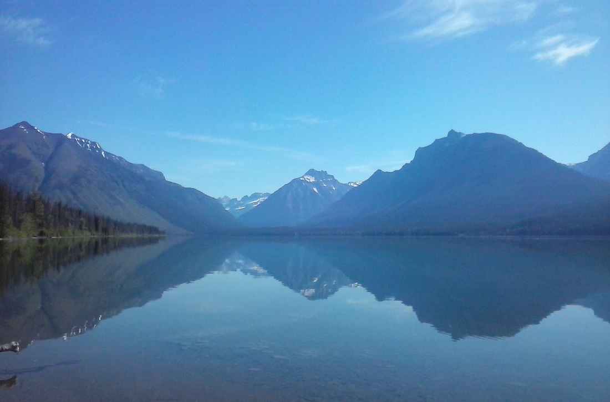

Hiking and Backpacking

I love to be outside in the mountains and forests. Losing myself in their freedom and beauty fills me with gratitude and amazement. Being outdoors uplifts my spirit and inspires me. I haven’t done much backpacking recently, last overnight backpacking was in bear country - Glacier National Park, Montana. Before that a 2-nighter in Desolation Wilderness on Lake Tahoe’s coast with a Summit of Mt Tallac. My favorite hiking location around here is Big Basins near Santa Cruz.